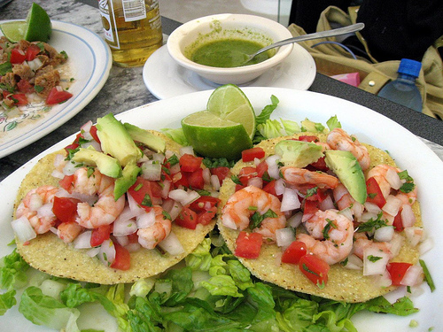
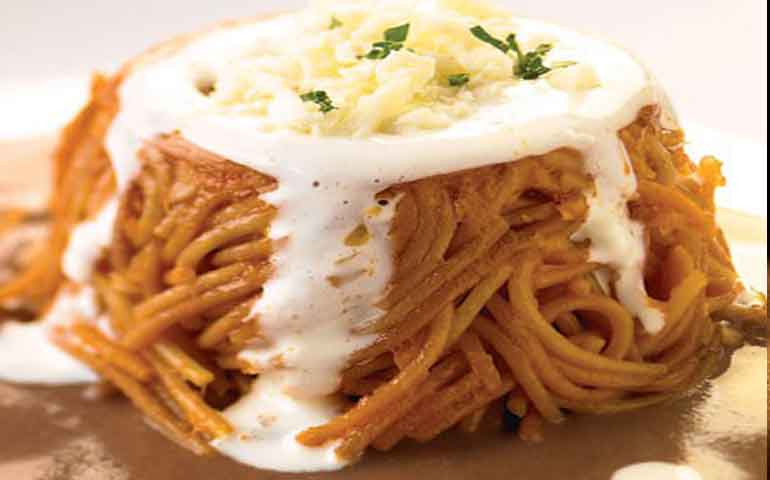
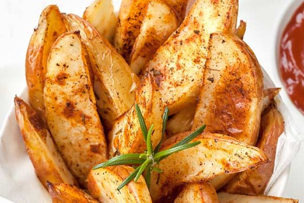
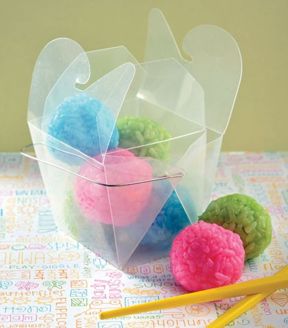
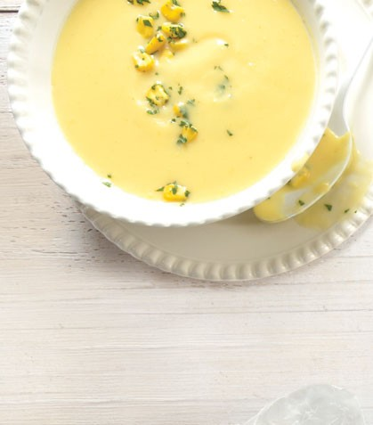

Fast Food
Fast Food Restaurant® • sep2015
Fast Food
Esta es una aplicación diseñada con el propósito de hacer más fácil el funcionamiento de la cocina, haciendo más sencilla la forma de ver cada platillo; en ella verás diferentes recetas, desde platillos típicos hasta buffetes de chef.
Fast Food Restaurant® • sep2015
Fast Food
Fast Food Restaurant® • sep2015
Fast Food
Contenido




Fast Food Restaurant® • sep2015
Fast Food
Contenido
Fast Food Restaurant® • sep2015
Fast Food
Contenido
Fast Food Restaurant® • sep2015
Tostada de Camarón
Ingredientes:
- 400 g de camarón pacotilla cocido y pelado
- 1/2 taza de catsup
- 1 cucharada de salsa tipo Búfalo
- 1 cucharada de vinagre balsámico
- 3 cucharadas de jugo de limón
- 3 cucharadas de aceite de oliva
- 1 taza cebolla picada
- 1/2 taza de cilantro picado
- 1 aguacate
- 8 tostadas
Preparación:
- Mezcla la catsup con la salsa Búfalo, el vinagre balsámico, el jugo de limón y el aceite de oliva, agrega los camarones y salpimienta a tu gusto.
- Coloca rebanadas de aguacate sobre las tostadas. Añade el coctel de camarón.
- Para adornar, agrega cebolla y cilantro. Sirve.
Fast Food Restaurant® • sep2015
Empanadillas de Atún
Ingredientes:
- 2 latas de atún
- 1/2 taza de cebolla picada
- 1 taza de jitomate picado
- 1 diente de ajo picado
- 1/3 de taza de zanahorias picadas
- 1/3 de taza de chícharos cocidos
- 1 cucharada de orégano
- 8 hojas para empanada
- Aceite suficiente para freír
Preparación:
- Sofríe la cebolla con la zanahoria y el ajo con una cucharada de aceite durante 5 minutos. Añade el jitomate y el orégano. Deja cocer a fuego medio durante 5 minutos y salpimienta.
- Agrega el atún ligeramente deshebrado y los chícharos, cuece hasta reducir todo el agua del jitomate. Permite que enfríe la mezcla completamente.
- Calienta muy bien el aceite. Coloca una cucharada de la mezcla en cada hoja de empanada, cierra con un poco de agua y pellizca las orillas. Fríe hasta que doren, resérvalas un momento en papel absorbente.
- . Envuélvelas en papel aluminio y envíalas.
Fast Food Restaurant® • sep2015
Moldes de fideo con caldo de frijol
Ingredientes:
- 200 g de fideos
- 1 taza de frijoles cocidos
- 4 jitomates
- 1/2 cebolla chica
- 1 diente de ajo
- 2 chiles guajillo desvenados, asados y remojados
- 1 1/2 tazas de caldo de pollo o agua
- 1/2 taza de crema
- 200 g de queso fresco desmoronado
- Aceite vegetal
Preparación:
- En una cacerola con aceite caliente fríe los fideos hasta que estén dorados; mueve con frecuencia para que no se quemen.
- Licua los jitomates, la cebolla, el ajo y los chiles, reserva 1 taza y vierte el resto sobre los fideos.
- . Añade el caldo y cocina a fuego bajo hasta que los fideos casi estén secos, retira de la estufa.
- . Licua la salsa que reservaste con los frijoles, vacía en un recipiente y cocina hasta que hierva y espese ligeramente.
- Reparte los fideos entre cuatro flaneras, presiona un poco para compactarlos y desmolda sobre los platos; báñalos con la salsa de frijol y sirve con crema y queso
Fast Food Restaurant® • sep2015
Bolitas de Arroz Coloridas

Ingredientes:
- 1 taza de arroz japonés
- 1 1/4 de tazas de agua
- 1 cucharada de vinagre
- 1 pizca de azúcar
- 1/3 de taza de surimi
- 3 gotas de colorante azul
- 3 gotas de colorante rosa
- 3 gotas de colorante verde
Preparación:
- Enjuaga el arroz hasta que el agua salga clara, cuélalo y colócalo en una olla junto con las tazas de agua de la receta.
- Calienta a fuego alto hasta que comience a salir espuma, reduce inmediatamente el fuego al mínimo y deja cocer 13 minutos. Reposa durante cinco minutos más.
- Mezcla el vinagre con el azúcar y una pizca de sal, incorpora esto cuidadosamente al arroz. Divide en tres partes iguales, agrega los diferentes colorantes a cada una de ellas.
- Una vez que el arroz esté frío, toma un poco y haz una bolita hueca, rellena con un poco de surimi y cierra. Deja sobre un plato en el refrigerador para que se sequen un poco antes de servir.
Fast Food Restaurant® • sep2015
Papas al Horno
Ingredientes:
- 4 papas grandes
- 2 rebanadas de tocino
- 1/2 cebolla finamente picada
- 1 diente de ajo finamente picado
- 1/2 taza de crema
- 2 tazas de caldo de pollo
- 3 rebanadas de queso amarillo picadas (opcional)
- 1 cucharada de orégano molido
- Sal y pimienta al gusto
- Aceite vegetal
Preparación:
- En una sarténfríe el tocino, cuando esté dorado, retíralo y ponlo sobre toallas de papel; reserva la grasa que soltó.
- . Corta una rebanada muy delgada a lo largo de las papas y retira la pulpa con una cuchara sacabocados para ahuecarlas (deja un espesor de 2-3 mm); reserva la pulpa y las papas.
- Unta la grasa del tocino por dentro y fuera de las papas, sazónalas con el orégano y ponlas en una charola.
- Hornea, en horno precalentado, 30 minutos a 180°C o hasta que estén cocidas; retíralas.
- Sofríe la cebolla y el ajo en una cacerola con aceite, incorpora la crema, el caldo y la pulpa de la papa; cocina hasta que hierva y la papa esté cocida.
- Procesa lo anterior en la licuadora para lograr una mezcla homogénea, vierte en la cacerola y cuando hierva, sazona con sal y pimienta.
- Reparte la sopa entre las papas y espolvorea el queso y el tocino.
Fast Food Restaurant® • sep2015
Sopa de elote con menta

Ingredientes:
- 2 tazas de granos de elote blanco cocidos
- 1 taza de granos de elote amarillo cocidos
- 3/4 de litro de caldo de pollo
- 1 taza de leche
- 3 cucharadas de queso crema
- 1/2 taza de vino blanco
- 2 cucharadas de aceite de oliva
- 2 cucharadas de menta picada
- 2 cucharadas de ajo picado
Preparación:
- Reserva cuatro cucharadas de granos de elote amarillo.
- Sofríe el ajo junto con los granos de elote con el aceite de oliva en una sartén grande. Agrega el vino y reduce a la mitad de su volumen.
- Añade el caldo de pollo y la leche, hierve por 8 minutos y licua junto con el queso crema hasta obtener una consistencia lisa. Cuela perfectamente.
- Rectifica el sabor y sirve. Decora con un poco de menta y una cucharada de granos de eloteamarillo antes de llevar a la mesa.
Fast Food Restaurant® • sep2015